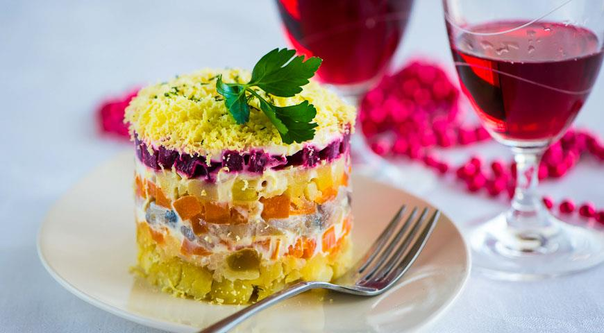

Салат Селедка под шубой появился в эпоху тотального дефицита, когда продукты в магазинах «давали» и «выбрасывали», на работе получали по талонам продуктовые «заказы», а обычный сервелат считался роскошью и праздничным блюдом в праздничном меню. Однако советские хозяйки и в таких условиях умудрялись накрывать роскошные праздничные поляны и из обычной свеклы-моркошки-картошки сооружали удивительно вкусные штуки. В частности, селедку под шубой.
Рецепт селедки под шубой невероятно прост. На блюдо или плоскую тарелку укладывают тонким слоем порезанное мелкими кусочками филе сельди, а сверху устраивают «шубу» - слои порезанных или натертых на крупной терке вареных овощей (свеклы, моркови, картофеля, лука), яйца, яблоко (в отличие от остальных ингредиентов яблоко должно быть сырое) и даже сыр.
Очередность слоев может быть, в принципе, любая, но картошку хорошо бы положить пониже (все-таки она тяжелая), а яйца – повыше, причем белок и желток укладывают, как правило, отдельно. Слои промазывают майонезом: кто-то – каждый слой, а те, кто следит за фигурой, – пореже.
Впрочем, обязательных ингредиетов в рецепте селедке под шубой, пожалуй, всего три: это собственно селедка, вареная (а лучше – печеная) свекла и яйца. Кто-то считает неуместным лук (якобы он убивает тонкий вкус малосольной сельди), кто-то – картошку, кто-то игнорирует морковь.
И даже селедка, в прямом смысле основа основ этого блюда, может быть заменена на что-нибудь более, как некоторым кажется, изысканное. Например, на лосось. В общем, главное правило – никаких правил. Главное – чтобы шуба была и чтобы она вам нравилась.
ИНГРЕДИЕНТЫ
- 500 г филе соленой сельди
- 500 г моркови
- 500 г свеклы
- 500 г картофеля
- 200 г репчатого лука
- 1-2 сваренных вкрутую яйца
- 200 г майонеза
- соль по вкусу
- черный молотый перец по вкусу

ПОШАГОВЫЙ РЕЦЕПТ ПРИГОТОВЛЕНИЯ
Шаг 1
Разогрейте духовку до 190 С. Заверните вымытые, но не очищенные овощи (кроме лука) в фольгу, положите сверток в форму и запекайте 40-50 мин. до мягкости.
Шаг 2
Очистите овощи и по отдельности натрите на крупной терке. Заправьте майонезом и приправьте солью и перцем по вкусу.
Шаг 3
Лук нарежьте как можно мельче, положите в дуршлаг и обдайте кипятком.
Шаг 4
Филе сельди мелко нарежьте.
Шаг 5
В прозрачный салатник или порционные салатники выложите слоями: лук, сельдь и картофель. Выложите слой моркови и свеклы. Повторите слои, начиная с лука.
Шаг 6
Держа мелкую терку над салатником, натрите яйца. Прикройте салатник пищевой пленкой и поставьте в холодильник на пару часов.